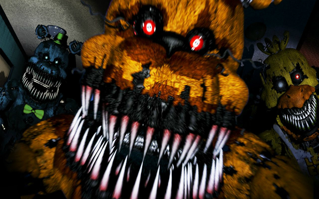
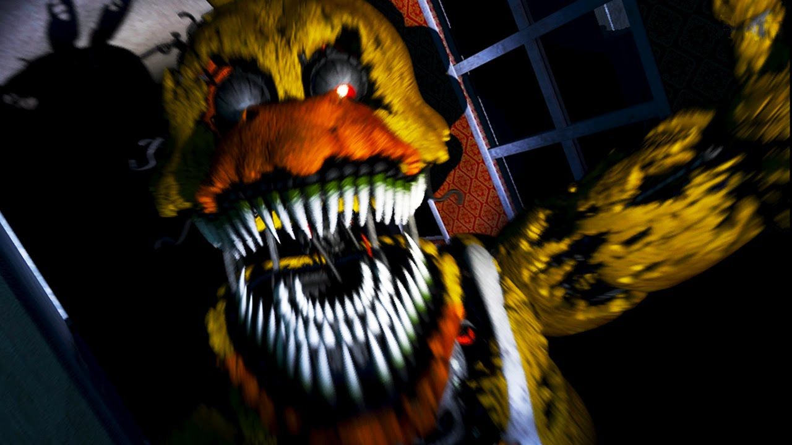

Den läskigaste horrorgamet (skrämspelet) jag vet om
 Five Nights at Freddy's (often abbreviated to FNaF) is a media franchise based around an indie video game series created, designed, developed, and published by Scott Cawthon for Microsoft Windows, iOS, and Android. The series is centered on the story of a fictional restaurant named Freddy Fazbear's Pizza (a pastiche of restaurants like Chuck E. Cheese's and ShowBiz Pizza Place). The first three games involve the player working as a nighttime security guard, in which they must utilize several tools, most notably checking security cameras, to survive against animatronic characters, which become mobile and homicidal after-hours. The fourth game, which gameplay differentiates to its predecessors, takes place in the house of a child who must defend against nightmarish versions of the animatronics by closing doors and fleeing on foot. The fifth game takes place in a maintenance facility owned by a sister company of Freddy Fazbear's Pizza. In this game, the player character is a technician instead of a night guard, who must do different tasks as told by an AI voice heard in the game. The series gained widespread popularity shortly after its release. Two novel adaptations, Five Nights at Freddy's: The Silver Eyes and Five Nights at Freddy's: The Twisted Ones, were released on December 17, 2015 and June 27, 2017, respectively. One more written publication is currently being written: a guidebook based on the series, The Freddy Files. A film adaptation is also in production. A horror attraction based on the series featured in the Adventuredome in Halloween of 2016. Additionally, the series appeared in the Guinness Book of Records: Gamer's Edition, breaking the record for the most sequels released in a year.[1]